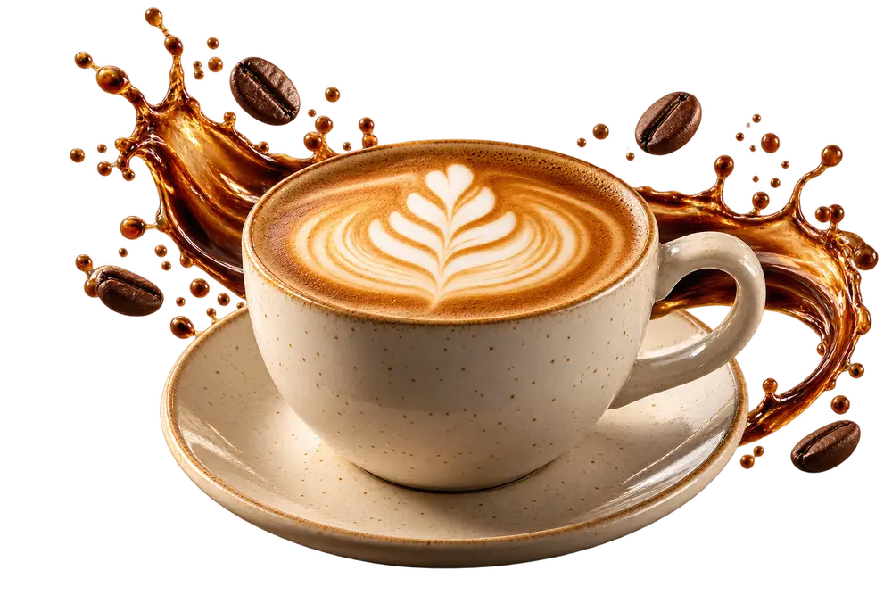
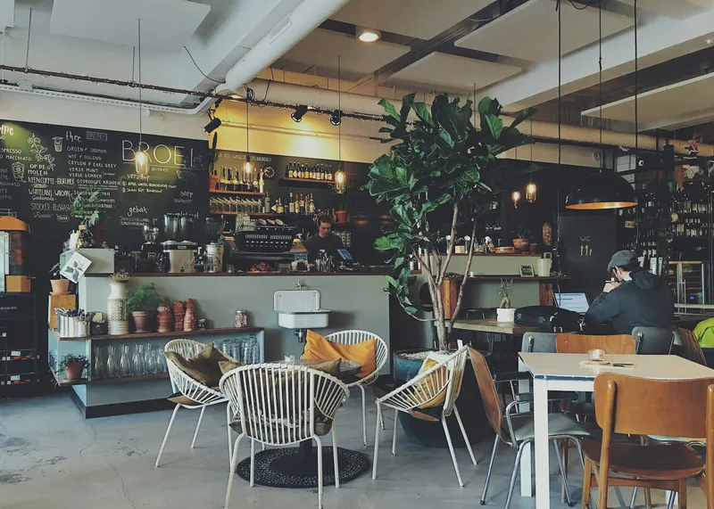
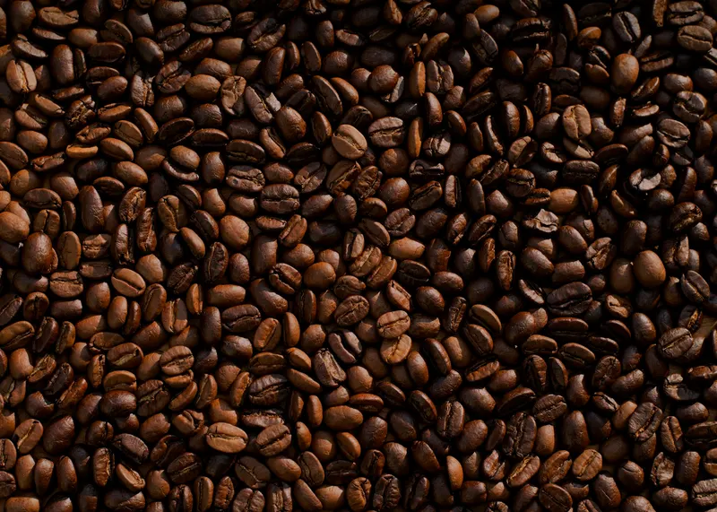
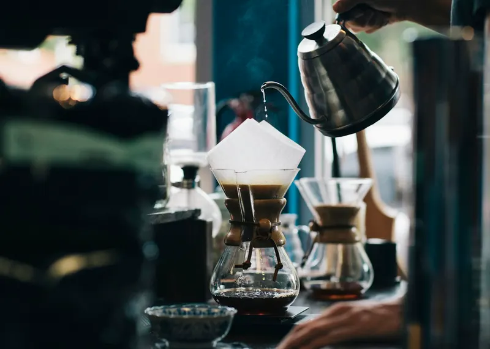
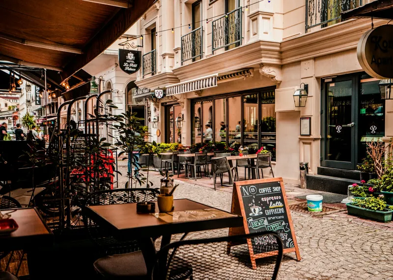

Classic Espresso
Rich. Bold. Beautifully simple.
GOOD COFFEE · GOOD PEOPLE · BETTER DAYS
Specialty coffee, cozy vibes and a space
where every cup tells a story.

A coffee house concept · Portfolio demonstration

OUR STORY
We believe the best moments begin with a pause. A warm cup, a familiar corner, a conversation that lasts a little longer.
Bean & Brew is an imagined coffee house, brought to life through thoughtful design.
Our Coffee Journey
EVERY BEAN
EVERY CUPSIGNATURE DRINKS
From bold espresso to creamy lattes, find a little inspiration for your next coffee break.
THE JOURNEY
A story of patience, curiosity and the little details that make a difference.
Take a MomentExplore the origin and character of coffee.
Roasting develops aroma, depth and flavor.
Time, water and technique find their balance.
A thoughtfully made cup, ready to enjoy.

THE EXPERIENCE
A little room to read, dream, catch up or simply relax. An imagined space for good coffee and unhurried moments.
Explore the AtmosphereLITTLE MOMENTS
A closer look at the textures,
light and rituals that inspire us.
THE EVERYDAY RITUAL
Make a little space in your day.
Find something new in the familiar.
Some things are better together.
VISIT THE CONCEPT
This café lives in our imagination.
Your next creative project doesn't have to.
Concept café
No physical location
Portfolio demonstration
Not open for visits
No orders or reservations
Explore the studio instead